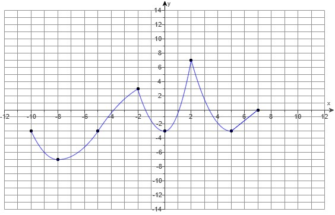
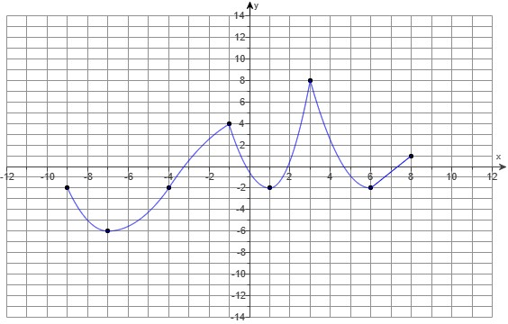
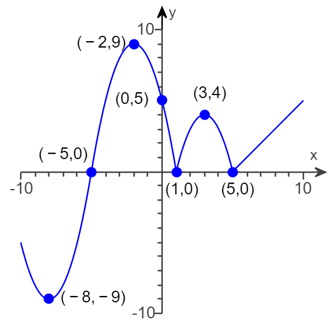
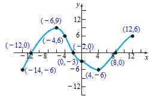
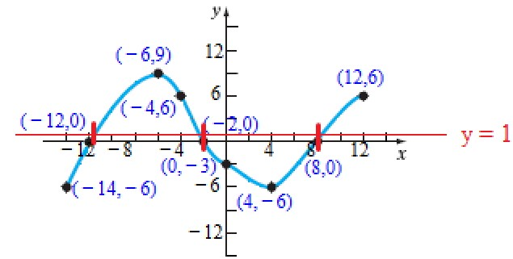
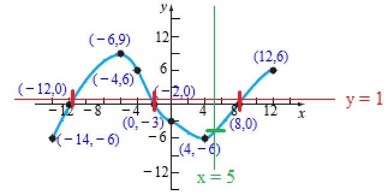

(1.) Analyze the graph of the function based on increasing, decreasing, and constant intervals.
In other words: Based on the graph, at what intervals of x does the function, y increase.
decrease, or remain constant?

$
y \uparrow \;\;\;for\;\;\; x \in (-8, -2) \cup (0, 2) \cup (5, 7) \\[3ex]
y \downarrow \;\;\;for\;\;\; x \in (-10, -8) \cup (-2, 0) \cup (2, 5)
$
(2.) State whether the following statements are true or false.
(a.) Every graph represents a function.
(b.) The graph of a function y = f(x) always crosses the y-axis.
(c.) The point (−7, −6) is on the graph of the equation x = 4y − 5.
(d.) The y-intercept of the graph of the function $y = f(x)$, whose domain is all real
numbers, is $f(0)$.
(a.) This statement is false because of the Vertical Line Test.
The statement is false because a graph that crosses the y-axis two times does not represent
a function.
If the vertical line intersects the graph at only one point, the graph is a function because no
input, x has more than one output, y.
If the vertical line intersects the graph at more than point, the graph is not a function because
there is at least an input, x that has more than one output, y.
The Vertical Line Test states that if a vertical line is drawn through the graph of a set of
points in the rectangular coordinate system, the
graph is a function if and only if the vertical line intersects the graph at only one
point.
If a graph crosses the y-axis more than one time, it has failed the Vertical Line Test
because it means that there is at least an input, x that has more than one output, y.
(b.) On the y-axis, the x-value is zero.
Some functions have domains that do not include zeros. For example, the parent function of a
rational function is $y = \dfrac{1}{x}$
For that function, the graph will never cross the y-axis because the vertical asymptote, $x =
0$ is the y-axis
There are some graphs that do not cross the y-axis. Hence, te graph of a function does not
always cross the y-axis
The statement is false.
$
(c.) \\[3ex]
x = 4y - 5 \\[3ex]
(-7, -6) \implies \\[3ex]
x = -7 \\[3ex]
y = -6 \\[3ex]
\implies \\[3ex]
-7 \stackrel{?}{=} 4(-6) - 5 \\[3ex]
-7 \stackrel{?}{=} -24 - 5 \\[3ex]
-7 \ne -29 \\[3ex]
$
The point (−7, −6) is not on the graph of the equation x = 4y
− 5.
(d.) The statement is true.
For all real number domain:
To find the y-intercept:
set x to 0 and
solve for y
Hence: for $y = f(x)$,
$y = f(0)$ is the value of the y-intercept.
But, please note that y-intercept is a point.
So, the y-intercept = $(0, y-value)$
(3.) Analyze the graph of the function based on increasing, decreasing, and constant intervals.
In other words: Based on the graph, at what intervals of x does the function, y increase.
decrease, or remain constant?

$
y \uparrow \;\;\;for\;\;\; x \in (-7, -1) \cup (1, 3) \cup (6, 8) \\[3ex]
y \downarrow \;\;\;for\;\;\; x \in (-9, -7) \cup (-1, 1) \cup (3, 6)
$
(4.) Complete the sentences below.
(a.) A set of points in the xy-plane is the graph of a function if and only if every _______
line intersects the graph in at most one point.
(b.) If the point (4,−1) is a point on the graph of f, then f( __ ) = ____.
(c.) If a function is defined by an equation in x and y, then the set of points
(x,y) in the xy-plane that satisfies the equation is called the _______
(d.) The graph of a function $y = f(x)$ can have more than one of which type of intercept?
(a.) A set of points in the xy-plane is the graph of a function if and only if every
vertical line intersects the graph in at most one point.
This is known as the Vertical Line Test
A vertical line shows if two different y-values correspond to the same value of x for
a set of points in the xy-plane.
If the vertical line intersects the graph at only one point, the graph is a function because no
input, x has more than one output, y.
If the vertical line intersects the graph at more than point, the graph is not a function because
there is at least an input, x that has more than one output, y.
Hence, the Vertical Line Test states that if a vertical line is drawn through the graph of a
set of points in the rectangular coordinate system, the
graph is a function if and only if the vertical line intersects the graph at only one
point.
(b.) If the point (4,−1) is a point on the graph of f, then f(4) =
−1
$
For\;\;the\;\;point:\;\;(x, y) \\[3ex]
y = f(x) \\[3ex]
f(x) = y \\[3ex]
$
(c.) If a function is defined by an equation in x and y, then the set of points
(x,y) in the xy-plane that satisfies the equation is called the
graph of the function.
(d.) Because of the Vertical Line Test: the graph of a function may intersect the y-axis only
one time.
This implies that the graph of a function may not have more than one y-intercept.
Because two different input (two different x-values) can have the same output (same
y-value), the graph of a function may have more than one x-intercept.
(5.) Based on the graph of the function f below:

(a.) Is f increasing on the interval [-2, 3]?
(b.) Is f decreasing on the interval [1, 3]?
(a.) From [-2, 3], the graph goes down from [-2, 1] and goes up from [1, 3]
Because it goes down and up, the function f is not increasing on the interval [-2, 3]
$
y \downarrow \;\;for\;\;x \in (-2, 1) \\[3ex]
y \uparrow \;\;for\;\; x \in (1, 3) \\[3ex]
$
(b.) The graph actually increases (goes up) on the interval [1, 3]
It is not decreasing on that interval.
$
y \uparrow \;\;for\;\; x \in (1, 3)
$
(6.) Determine the value of p such that the point (−1, 3) is on the graph of $f(x) =
px^2 + 5$.
$
f(x) = px^2 + 5 \\[3ex]
y = px^2 + 5 \\[3ex]
For\;\;the\;\;point\;\;(-1, 3) \\[3ex]
x = -1 \\[3ex]
y = 3 \\[3ex]
\implies \\[3ex]
3 = p(-1)^2 + 5 \\[3ex]
3 = p(1) + 5 \\[3ex]
3 = p + 5 \\[3ex]
p + 5 = 3 \\[3ex]
p = 3 - 5 \\[3ex]
p = -2 \\[3ex]
$
(7.) Use the graph to answer the questions.

$
(a.)\;\; f(-14) \\[3ex]
(b.)\;\; f(-4) \\[3ex]
(c.)\;\; f(12) \\[3ex]
(d.)\;\; f(0) \\[3ex]
(e.)\;\; f(4) \\[3ex]
$
(f.) For what value(s) of x is $f(x) = 0$?
Use a comma to separate answers as needed.
(g.) For what value(s) of x is $f(x) \gt 0$?
Type a compound inequality. Use a comma to separate answers as needed.
(h.) Write the domain of f in set notation.
(i.) Write the range of f in set notation.
(j.) What are the x-values of the x-intercept(s)?
Type an integer or a simplified fraction. Use a comma to separate answers as needed.
(k.) What are the y-values of the y-intercept(s)?
Type an integer or a simplified fraction. Use a comma to separate answers as needed.
(l.) How often does the line y = 1 intersect the graph?
(m.) How often does the line x = 5 intersect the graph?
(n.) For what value(s) of x does $f(x) = -6$?
Use a comma to separate answers as needed.
(o.) For what value(s) of x does $f(x) = 9$?
Use a comma to separate answers as needed.
$
(a.)\;\; f(-14) = -6 \\[3ex]
(b.)\;\; f(-4) = 6 \\[3ex]
(c.)\;\; f(12 = 6) \\[3ex]
(d.)\;\; f(0) = -3 \\[3ex]
(e.)\;\; f(4) = -6 \\[3ex]
(f.) \\[3ex]
(-12, 0) \\[3ex]
(-2, 0) \\[3ex]
(8, 0) \\[3ex]
\implies \\[3ex]
f(x) = 0\;\;when\;\;x = -12, -2, 8 \\[3ex]
(g.) \\[3ex]
\underline{Excluded} \\[3ex]
(-12, 0) \\[3ex]
(-2, 0) \\[3ex]
(8, 0) \\[3ex]
\underline{Included} \\[3ex]
(-6, 9) \\[3ex]
(-4, 6) \\[3ex]
(12, 6) \\[3ex]
\implies \\[3ex]
f(x) \gt 0\;\;for \\[3ex]
-12 \lt x \lt -2, \;\;8 \lt x \le 12 \\[3ex]
(h.) \\[3ex]
Minimum\;\;x-value = -14 \\[3ex]
Maximum\;\; x-value = 12 \\[3ex]
D = \{x | -14 \le x \le 12\} \\[3ex]
(i.) \\[3ex]
Minimum\;\;y-value = -6 \\[3ex]
Maximum\;\; y-value = 9 \\[3ex]
R = \{y | -6 \le y \le 9\} \\[3ex]
(j.) \\[3ex]
x-intercepts = (-12, 0),\;\;(-2, 0),\;\; (8, 0) \\[3ex]
x-values\;\;of\;\;the\;\;x-intercept = -12, -2, 8 \\[3ex]
(k.) \\[3ex]
y-intercept = (0, -3) \\[3ex]
y-value\;\;of\;\;the\;\;y-intercept = -3 \\[3ex]
$
(l.) Let us draw the line: $y = 1$ through the graph and count the number of times it intersects the
graph.

There are three times (three vertical red lines) where the horizontal line $y = 1$ intersects the
graph.
(m.) Let us draw the line: $x = 5$ through the graph and count the number of times it intersects the
graph.

There is only one time (one horizontal green line) where the vertical line $x = 5$ intersects the
graph.